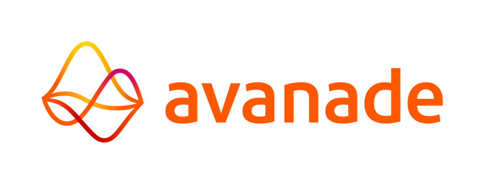
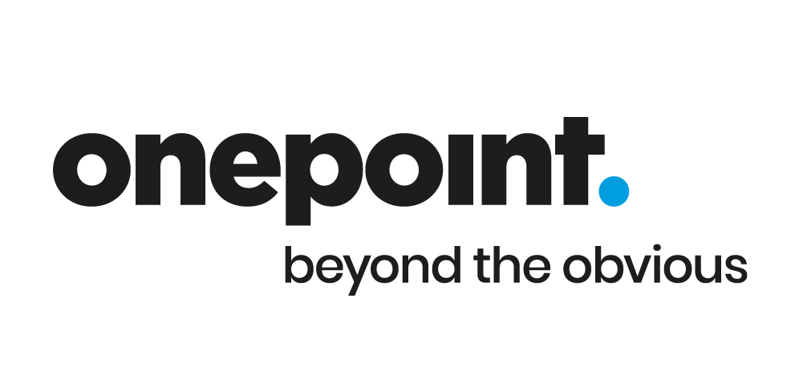

R&D Internship
I participated in the development of mixed reality applications on HoloLens 2 using Unity and MRTK, with particular attention to ergonomics and user interaction. In parallel, I contributed to the implementation of business processes via Microsoft Guides to support the digitalization of professional gestures. This mission was also an opportunity to structure the organization of work in agile mode using Azure DevOps tools.
Unity
C++
Hololens

Full Stack Developer (Java/Angular)
As part of an internal audit-oriented project, I developed a banking data supervision module in Java/Angular, designed to facilitate control and reliability of information. I also designed and integrated a static data management tool within an annual report application to simplify daily administration. To improve the fluidity of data exchanges, I configured Amazon S3 buckets on AWS, and participated in the deployment of the entire system on a Kubernetes infrastructure. All of this was part of an agile environment structured around GitLab and JIRA.
Java 11 & Spring Boot 2.7
Angular 14
Kubernetes
Full Stack Developer (Java/Angular)
I led the redesign of an expense management application, from the design phase to production deployment. I ensured the complete development of the front-end and back-end, as well as the implementation of their communication. Finally, I assisted teams in configuring and maintaining the deployment of the application on a Kubernetes infrastructure.
Java 17 & Spring Boot 2.7
Angular 16
Kubernetes
Management & Coaching
I managed the IT Cloud Developer initiative, with the objective of supporting developers in migrating their applications to the Cloud. This involved both an advisory role on the proper configuration of deployments and ensuring their alignment with the team's overall technical strategy.
Documentation
Training
Full Stack Developer (Java/Angular)
I led the migration of BRED's showcase website by integrating Strapi as a headless CMS to modernize content management. I set up a backend to retrieve, filter, and transmit data to the frontend, while managing form validation and email sending. I also designed and developed responsive interfaces in Angular with Bootstrap, dynamically adapting content for a smooth experience on web and mobile.
Java 21 & Spring Boot 3.1
Angular 18
Kubernetes